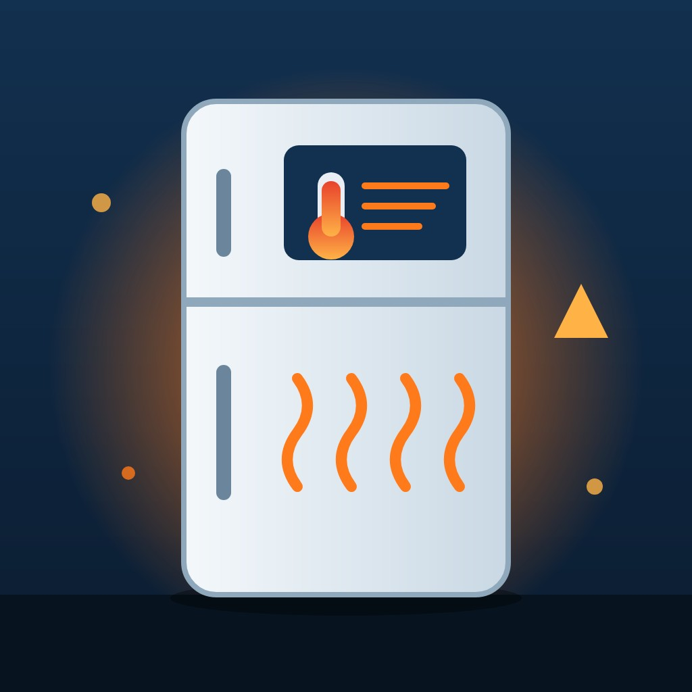

Technology

Second wave of refrigeration hacks spoils food in European supermarkets
Overnight on 1 to 2 November, attackers remotely switched supermarket fridges and freezers into defrost mode in at least seven European countries, three weeks after a similar attack hit about 700 French stores.
Abstract
Supermarket refrigeration in Europe was attacked in two waves within three weeks. On 11 October 2026, refrigeration systems in French supermarkets were remotely forced to defrost, and the minister Roland Lescure said about 700 of roughly 10,000 supermarkets had been affected[1,2,3]. Overnight on 1 to 2 November, attackers switched fridges and freezers into defrost mode in several European countries, with some units set to 50C[4,5,6]. Euronews counted about 75 affected Belgian outlets, and France 24 listed at least eight countries[7,8]. Danfoss said most affected units were legacy products or current products running outdated firmware[9]. Exposure counts differ by method: Censys counted 2,991 exposed Danfoss StoreView hosts worldwide on 11 October, whereas ONYPHE found 6,212 public IP addresses across 95 countries and territories[10,11]. French loss figures range from €270,000 at two shops to tens of millions of euros nationally[3,12]. The attacks act directly on physical equipment, so what is lost is food rather than data. Danfoss says affected operators were warned[13]. No group has claimed either wave, and it is not known whether the same people were behind both[14]. The Centre for Cybersecurity Belgium said the perpetrators may never be identified, and it was unclear whether the vulnerabilities published by Claroty were exploited[14,15].
Key points
- Lescure said about 700 of France's roughly 10,000 supermarkets were affected by the attack of 11 October[1,2].
- Euronews counted about 75 affected Belgian outlets, while The Record reported more than 50[7,14].
- Danfoss named the AK-SM800, declared end-of-life in 2021, and the AK-SC355, phased out in 2016, as affected legacy products[9].
- According to Censys, exposed Danfoss hosts in France fell 71%, from 1,825 on 11 October to 537 on 14 October[10].
- ONYPHE found 6,212 public IP addresses showing Danfoss StoreView Browser interfaces across 95 countries and territories, with about half in France[11].
- French loss figures range from €270,000 at two Haguenau shops to tens of millions of euros nationally[3,12].
References
- Massive Cyberattack Targets Refrigeration Systems at French Supermarkets. ACHR News; Oct 2026. News report✓ Link checkedArchived copySupports the 11 October date, Lescure's figure of 700 of 10,000 supermarkets and his supply-chain remarks, ANSSI's assistance, Copeland's statement, and SNEFCCA's concerns. ↩
- Refrigeration hack affected about 700 French supermarkets, government says, as Danfoss interfaces stay online. ComplexDiscovery; Oct 2026. News report✓ Link checkedArchived copySupports Lescure's statement to Parliament on 13 October, Reuters' count of 4,500 exposed interfaces, and Predicta Lab's count of 2,752 systems, 1,590 of them in France. ↩
- Hundreds of supermarkets in France hit by 'unprecedented' cyberattack. Al Jazeera; 13 Oct 2026. News report✓ Link checkedArchived copySupports the fires at several sites, the forced defrosting at up to 50C, and the Intermarché chief executive's estimate of tens of millions of euros. ↩
- A fresh wave of cyberattacks has hit Europe's supermarket refrigerators, destroying food across countries. TechCrunch; 2 Nov 2026. News report✓ Link checkedArchived copySupports the November attacks spoiling food, the report of a US Defense Department inquiry into Iran-backed hackers, Iranian hackers being blamed for attacks on US water providers, and the 2025 UNFI attack. ↩
- Supermarkets across Europe hit by new fridge cyberattacks. NBC News; 2 Nov 2026. News report✓ Link checkedSupports the date of the attacks, Moelans's statement to Belga about evaporators switched to defrost mode, and the 50C (122F) setting. ↩
- Suspected cyberattacks trigger supermarket fridge failures across Europe. Al Jazeera; 2 Nov 2026. News report✓ Link checkedArchived copySupports the 50C pattern matching the French attack, the quoted passages on European states blaming Moscow and Russian denials, the reference to the Iran-United States war, and John Billow's quote. ↩
- Cyberattacks hit supermarket fridges and freezers in Europe, Belgium launches investigation. Euronews; 2 Nov 2026. News report✓ Link checkedArchived copySupports the breakdown of about 75 affected Belgian outlets, the federal prosecutor's investigation, temperatures of 17C in Belgium, and Danfoss blaming outdated software. ↩
- Fridge cyberattack hits supermarkets across Europe. France 24; 2 Nov 2026. News reportSite blocks checksSupports the list of at least eight countries, the seven Intermarché stores in Portugal, Carrefour Belgium's figures and Vergauwen's quote, Hansen's quote, and Roni Kokkola's quote. ↩
- Danfoss moves to mitigate cyberattack. Cooling Post; 12 Oct 2026. News report✓ Link checkedArchived copySupports Danfoss's statement on legacy AK-SM800 (end-of-life 2021) and AK-SC355 (phased out 2016) units, its quoted mitigation measures, its long-standing advice to customers, and the continuous defrost cycles. ↩
- France: Internet-Exposed Danfoss Controllers Drop 71% After Cyber-Attack. Infosecurity Magazine; Oct 2026. News report✓ Link checkedArchived copySupports the Censys counts of 2,991 hosts worldwide and 1,825 in France on 11 October, the fall to 537 by 14 October, and the fall outside France from 1,166 to 966. ↩
- Refrigeration as Critical Infrastructure: Analyzing the Cyberattack on French Supermarkets. ONYPHE; 13 Oct 2026. Primary data✓ Link checkedArchived copySupports the detection method, the 6,212 IP addresses across 95 countries and territories, the outdated versions, telecom network hosting, and the port-forwarding interpretation. ↩
- Un piratage "pas si sophistiqué que ça" : ce que l'on sait de la cyberattaque qui a fait monter en température les frigos de supermarchés. franceinfo; Oct 2026. News report✓ Link checkedArchived copySupports the Paris prosecutor's inquiry through Ofac, the €270,000 Haguenau losses, the several-million-euro estimate, and Clément Domingo's assessment. ↩
- Fridges, freezers of 17 Dutch businesses attacked; Large supermarkets unaffected. NL Times; 2 Nov 2026. News report✓ Link checkedSupports the 17 affected Dutch businesses, Danfoss's 13 October advice and spokesperson quotes, default passwords, and the separate Albert Heijn attack. ↩
- Second wave of suspected cyberattacks hits supermarket freezers across Europe. The Record by Recorded Future News; 2 Nov 2026. News report✓ Link checkedArchived copySupports the absence of claims and identified perpetrators, uncertainty over whether the two waves are linked, Copeland equipment in Belgium, more than 50 Belgian stores, about 20 units needing physical modification, and Katrien Eggers's quote. ↩
- Refrigeration Controller Hack Spoils Food Across European Supermarkets. SecurityWeek; 13 Oct 2026. News report✓ Link checkedArchived copySupports the statement that it was unclear whether the Claroty-disclosed vulnerabilities were exploited. ↩
Two waves of attacks on refrigeration systems
Supermarket refrigeration in Europe was attacked in two waves within three weeks. The first came on the evening of 11 October 2026 in France[1]. Speaking in the National Assembly on 13 October, the minister Roland Lescure said about 700 of France's roughly 10,000 supermarkets had been affected[1,2]. The attackers remotely forced the refrigeration systems to defrost, pushing temperatures as high as 50C[3]. The Paris prosecutor's office opened an inquiry through the national anti-cybercrime office (Ofac) to identify victims and establish the food losses[4].
Overnight on Monday 2 November 2026, hackers switched refrigeration systems in supermarkets and food shops in several European countries to defrost, so that fridges and freezers warmed up and food was destroyed[5,6]. Stephan Moelans, chief executive of the Belgian refrigeration contractor Sabcobel, told the Belga news agency that the incident was a cyberattack in which the units' evaporators were switched to defrost mode[6]. Some units were set to 50C (122F), which matches the pattern of the attack on French supermarkets in October[6,7]. No person or group had claimed responsibility, and no authority had named a perpetrator[8,9].
Uneven damage across countries
Belgium appears to have been hit hardest. Euronews counted about 75 affected Belgian outlets, and Belgium's federal prosecutor's office has opened an investigation[10]. The Swedish retailer Coop said six of its roughly 800 stores were affected[8]. Musgrave, which runs the SuperValu chain in Ireland, said 13 stores were affected[11]. In the Netherlands at least 17 businesses, mostly butchers and small local food shops, were affected, while the large supermarket chains were not[12]. The Estonian public broadcaster ERR reported that an attack on one Selver supermarket was detected and reversed within about ten minutes, with no damage to products[13].
Sources differ on how many countries were involved. France 24 listed at least eight: Belgium, Estonia, Finland, Ireland, Luxembourg, the Netherlands, Portugal and Sweden[14]. The European Commissioner Christophe Hansen called the incidents "a deliberate attempt to disrupt our food supply chain and undermine consumers' confidence", but maintained that Europe's food security was not currently at risk[14,15].
Measured damage is also uneven. Engla Ingwall, a sales manager at an ICA franchise in Stockholm, told Reuters: "Everything is destroyed", and said all its freezers had reached 50C[16,17]. Two Intermarché supermarkets in Haguenau reported €270,000 of lost goods[4]. Al Jazeera reported that the chief executive of Intermarché estimated losses of tens of millions of euros nationwide in a single day[3]. The loss estimates come from affected companies and press sources, not from an official audit.
Ageing controllers left reachable from the internet
Both waves involved refrigeration controllers made by Danfoss, a company headquartered in Denmark[18,19]. On 12 October Danfoss said that most of the affected units were legacy products or current products running outdated firmware. It named the AK-SM800, declared end-of-life in 2021, and the AK-SC355, phased out in 2016[20]. Nordisk Post reported that the same two models were identified in the November attacks[15]. CERT-FR, France's government computer emergency response team, said that exposing these management interfaces to the internet goes against good security practice, and that unpatched end-of-life equipment left exposed faced a very high probability of compromise[21].
Weaknesses in Danfoss's current model had been documented before the attacks. In a report dated 9 August 2026, researchers at Claroty's Team82 described a hidden "code-of-the-day" login in the AK-SM 800A. It checked users against a password generated from the device's date and time[22]. It is not established that such flaws were the ones used. SecurityWeek reported that it was unclear whether the Claroty findings had been exploited[23]. The ethical hacker Clément Domingo told franceinfo that the attack was not especially sophisticated: a missed update and a simple password based on the day's date[4].
Estimates of exposed controllers vary with the scanning method. Infosecurity Magazine reported that Censys counted 2,991 internet-exposed Danfoss StoreView hosts worldwide on 11 October, 1,825 of them in France[24]. ONYPHE, using a different method, found 6,212 unique public IP addresses showing Danfoss StoreView Browser interfaces, spread across 95 countries and territories, with about half in France[25]. The figures were taken on different days and count addresses or hosts rather than physical controllers, and exposure is not the same as compromise. According to Censys, exposed hosts in France fell from 1,825 on 11 October to 537 on 14 October, a drop of 71%[24].
Attribution and responsibility
No group has claimed either wave, and it is not known whether the same people were behind both[9]. Katrien Eggers, spokesperson for the Centre for Cybersecurity Belgium, said: "It is not known who is behind this attack, and it may never be possible to identify them"[9]. Al Jazeera wrote that "European states have blamed Moscow for a growing number of incidents affecting infrastructure, including via cyberattacks, in recent months", and that Russia "has repeatedly denied involvement in any sabotage or hybrid warfare operations"[7]. TechCrunch reported that US Department of Defense officials were investigating whether Iran-backed hackers had targeted freezer units at military bases[5]. That report comes from a single outlet and does not link those events to the European incidents.
Jann Mutso of the refrigeration technology company Kitman Coldtech said older Danfoss units had been targeted, and added: "The handwriting is the same"[19]. A shared method fits a single actor, but it also fits imitators copying a technique that was widely reported after the French attack.
Danfoss's position is that customers had been warned. NL Times reported that Danfoss told Dutch clients on 13 October to disconnect their systems from the internet[12]. Fredrik Blix, a cybersecurity researcher at Stockholm University, called the November attacks a failure and said the lesson should have been learned weeks earlier[26]. Governments have so far responded mainly with advice. The Dutch National Cyber Security Centre advised businesses to contact their refrigeration suppliers, install updates, restrict internet access to trusted IP addresses and use strong passwords[27].
What remains uncertain
The identity of the attackers is unknown[9]. It is unclear whether the attackers exploited the flaws disclosed by Claroty, and the account of a missed update and a date-based password comes from the ethical hacker Clément Domingo[4,23]. Basic counts are still unsettled: Euronews counted about 75 affected Belgian outlets, while The Record reported more than 50[9,10]. French loss figures come from retailers and from unnamed sources quoted in the press[3,4]. CERT-FR has warned that attack campaigns are probably continuing[21]. Who bears responsibility for equipment its maker no longer supports remains unresolved.
References
- Massive Cyberattack Targets Refrigeration Systems at French Supermarkets. ACHR News; Oct 2026. News report✓ Link checkedArchived copySupports the 11 October date, Lescure's figure of 700 of 10,000 supermarkets and his supply-chain remarks, ANSSI's assistance, Copeland's statement, and SNEFCCA's concerns. ↩
- Refrigeration hack affected about 700 French supermarkets, government says, as Danfoss interfaces stay online. ComplexDiscovery; Oct 2026. News report✓ Link checkedArchived copySupports Lescure's statement to Parliament on 13 October, Reuters' count of 4,500 exposed interfaces, and Predicta Lab's count of 2,752 systems, 1,590 of them in France. ↩
- Hundreds of supermarkets in France hit by 'unprecedented' cyberattack. Al Jazeera; 13 Oct 2026. News report✓ Link checkedArchived copySupports the fires at several sites, the forced defrosting at up to 50C, and the Intermarché chief executive's estimate of tens of millions of euros. ↩
- Un piratage "pas si sophistiqué que ça" : ce que l'on sait de la cyberattaque qui a fait monter en température les frigos de supermarchés. franceinfo; Oct 2026. News report✓ Link checkedArchived copySupports the Paris prosecutor's inquiry through Ofac, the €270,000 Haguenau losses, the several-million-euro estimate, and Clément Domingo's assessment. ↩
- A fresh wave of cyberattacks has hit Europe's supermarket refrigerators, destroying food across countries. TechCrunch; 2 Nov 2026. News report✓ Link checkedArchived copySupports the November attacks spoiling food, the report of a US Defense Department inquiry into Iran-backed hackers, Iranian hackers being blamed for attacks on US water providers, and the 2025 UNFI attack. ↩
- Supermarkets across Europe hit by new fridge cyberattacks. NBC News; 2 Nov 2026. News report✓ Link checkedSupports the date of the attacks, Moelans's statement to Belga about evaporators switched to defrost mode, and the 50C (122F) setting. ↩
- Suspected cyberattacks trigger supermarket fridge failures across Europe. Al Jazeera; 2 Nov 2026. News report✓ Link checkedArchived copySupports the 50C pattern matching the French attack, the quoted passages on European states blaming Moscow and Russian denials, the reference to the Iran-United States war, and John Billow's quote. ↩
- More grocery stores in Europe report fridge and freezer temperature spikes as apparent cyberattacks continue. CBS News; 2 Nov 2026. News report✓ Link checkedArchived copySupports the absence of claims of responsibility, the Coop and ICA store figures, the Sjöbo store post about a 50-degree setting, and technicians being mobilised at 1 a.m. ↩
- Second wave of suspected cyberattacks hits supermarket freezers across Europe. The Record by Recorded Future News; 2 Nov 2026. News report✓ Link checkedArchived copySupports the absence of claims and identified perpetrators, uncertainty over whether the two waves are linked, Copeland equipment in Belgium, more than 50 Belgian stores, about 20 units needing physical modification, and Katrien Eggers's quote. ↩
- Cyberattacks hit supermarket fridges and freezers in Europe, Belgium launches investigation. Euronews; 2 Nov 2026. News report✓ Link checkedArchived copySupports the breakdown of about 75 affected Belgian outlets, the federal prosecutor's investigation, temperatures of 17C in Belgium, and Danfoss blaming outdated software. ↩
- Refrigeration systems at 13 SuperValu stores hit by suspected cyber attack. RTÉ; 2 Nov 2026. News report✓ Link checkedArchived copySupports the 13 affected SuperValu stores, the specific refrigeration model, the withdrawal of products, the briefing of Jim O'Callaghan, NCSC monitoring, and Conor Flynn's quote. ↩
- Fridges, freezers of 17 Dutch businesses attacked; Large supermarkets unaffected. NL Times; 2 Nov 2026. News report✓ Link checkedSupports the 17 affected Dutch businesses, Danfoss's 13 October advice and spokesperson quotes, default passwords, and the separate Albert Heijn attack. ↩
- Hackers raised freezer temperature at Selver supermarket to +50°C. ERR News; 2 Nov 2026. News report✓ Link checkedArchived copySupports the Selver incident being reversed in about ten minutes without damage, and Jann Mutso's remarks on old controllers that had not been updated. ↩
- Fridge cyberattack hits supermarkets across Europe. France 24; 2 Nov 2026. News reportSite blocks checksSupports the list of at least eight countries, the seven Intermarché stores in Portugal, Carrefour Belgium's figures and Vergauwen's quote, Hansen's quote, and Roni Kokkola's quote. ↩
- Danfoss refrigeration systems hit in new cyberattacks across Europe. Nordisk Post; 2 Nov 2026. News report✗ Link not workingSupports the Finnish cause still being under investigation, Hansen saying food security was not currently at risk, the AK-SM800 and AK-SC355 models being identified in November, and its list of countries including Denmark. ↩
- New cyberattack on supermarket fridges sweeps across Europe. Business Insurance; 2 Nov 2026. News report✓ Link checkedArchived copySupports Engla Ingwall's quote, the €15,000 butcher loss, Tom Hegel's and Katrien Eggers's AI quotes, and Reuters being unable to establish responsibility. ↩
- National Cyber Directorate issues warning to Israeli retail chains after European stores hacked. The Jerusalem Post; 2 Nov 2026. News report✓ Link checkedArchived copySupports Engla Ingwall's role at a Stockholm ICA franchise and the Israel National Cyber Directorate's recommendations. ↩
- Danfoss AK-SM 8xxA Series (Update A). Cybersecurity and Infrastructure Security Agency; 26 Aug 2025. Official report✓ Link checkedArchived copySupports Danfoss's Denmark headquarters, the CVE identifiers and CVSS scores, the affected AK-SM 8xxA series, credit to Claroty, fixes in R4.2 and R4.3.1, and worldwide deployment. ↩
- Fresh wave of fridge cyberattacks hits European supermarkets. France 24; 2 Nov 2026. News reportSite blocks checksSupports Danfoss as the maker of the older units targeted in France and Estonia, and Jann Mutso's quote. ↩
- Danfoss moves to mitigate cyberattack. Cooling Post; 12 Oct 2026. News report✓ Link checkedArchived copySupports Danfoss's statement on legacy AK-SM800 (end-of-life 2021) and AK-SC355 (phased out 2016) units, its quoted mitigation measures, its long-standing advice to customers, and the continuous defrost cycles. ↩
- Incident de sécurité ciblant les contrôleurs à distance des installations de réfrigération. CERT-FR (ANSSI); 12 Oct 2026. Official report✓ Link checkedArchived copySupports the alert number and dates, the affected product families, the warning that campaigns are probably ongoing, the very high probability of compromise, and the recommended remedies. ↩
- Freeze the Controller, Defrost the Food: Uncovering Vulnerabilities in Danfoss Refrigeration Controllers. Claroty Team82; 9 Aug 2026. Other✗ Link not workingArchived copySupports the code-of-the-day mechanism, the three CVEs and their scores, and the count of about 2,765 exposed devices found with Censys. ↩
- Refrigeration Controller Hack Spoils Food Across European Supermarkets. SecurityWeek; 13 Oct 2026. News report✓ Link checkedArchived copySupports the statement that it was unclear whether the Claroty-disclosed vulnerabilities were exploited. ↩
- France: Internet-Exposed Danfoss Controllers Drop 71% After Cyber-Attack. Infosecurity Magazine; Oct 2026. News report✓ Link checkedArchived copySupports the Censys counts of 2,991 hosts worldwide and 1,825 in France on 11 October, the fall to 537 by 14 October, and the fall outside France from 1,166 to 966. ↩
- Refrigeration as Critical Infrastructure: Analyzing the Cyberattack on French Supermarkets. ONYPHE; 13 Oct 2026. Primary data✓ Link checkedArchived copySupports the detection method, the 6,212 IP addresses across 95 countries and territories, the outdated versions, telecom network hosting, and the port-forwarding interpretation. ↩
- Experterna: Riskerna är välkända. SVT; 2 Nov 2026. News report✓ Link checkedSupports Fredrik Blix's comments on supplier systems and the failure to learn lessons, and Billow's advice on passwords and multi-factor authentication. ↩
- In het nieuws: cyberaanvallen op koelinstallaties in Europa. Nationaal Cyber Security Centrum (Netherlands); 2 Nov 2026. Official statement✓ Link checkedArchived copySupports the Dutch NCSC's advice to businesses and the reporting duty under the Dutch Cybersecurity Act in force since 15 August. ↩
Abstract
Supermarket refrigeration in Europe was attacked in two waves within three weeks. On 11 October 2026, refrigeration systems in French supermarkets were remotely forced to defrost, and the minister Roland Lescure said about 700 of roughly 10,000 supermarkets had been affected[1,2,3]. Overnight on 1 to 2 November, attackers switched fridges and freezers into defrost mode in several European countries, with some units set to 50C[4,5,6]. Euronews counted about 75 affected Belgian outlets, and France 24 listed at least eight countries[7,8]. Danfoss said most affected units were legacy products or current products running outdated firmware[9]. Exposure counts differ by method: Censys counted 2,991 exposed Danfoss StoreView hosts worldwide on 11 October, whereas ONYPHE found 6,212 public IP addresses across 95 countries and territories[10,11]. French loss figures range from €270,000 at two shops to tens of millions of euros nationally[3,12]. The attacks act directly on physical equipment, so what is lost is food rather than data. Danfoss says affected operators were warned[13]. No group has claimed either wave, and it is not known whether the same people were behind both[14]. The Centre for Cybersecurity Belgium said the perpetrators may never be identified, and it was unclear whether the vulnerabilities published by Claroty were exploited[14,15].
1Overnight temperature spikes in shops across northern Europe
Overnight on Monday 2 November 2026, hackers switched refrigeration systems in supermarkets and food shops in several European countries to defrost, so that fridges and freezers warmed up and food was destroyed[4,5]. Stephan Moelans, chief executive of the Belgian refrigeration contractor Sabcobel, told the Belga news agency that the incident was a cyberattack in which the units' evaporators were switched to defrost mode[5]. Some units were set to 50C (122F), which matches the pattern of an attack on French supermarkets in October[5,6]. No person or group had claimed responsibility, and no authority had named a perpetrator[14,16].
Belgium appears to have been hit hardest. Euronews counted about 75 affected Belgian outlets: roughly 40 Delhaize Proxy shops, 15 Carrefour Shop & Go stores, 15 Intermarché shops, five Spar shops at Q8 service stations, the butchery group De Laet en Van Haver and an Ikea store in Mons[7]. Carrefour Belgium said about 15 of its 700 stores were disrupted, and its spokesman Mich Vergauwen said: "It's a cyberattack, there is no other reason"[8]. Belgium's federal prosecutor's office has opened an investigation[7].
Elsewhere the reported numbers were smaller. The Swedish retailer Coop said six of its roughly 800 stores were affected, and its rival ICA said a limited number of its stores were hit[16]. According to the Irish public broadcaster RTÉ, Musgrave, which runs the SuperValu chain in Ireland, said 13 stores were affected, that the problem was limited to a specific model of refrigeration, and that chilled and frozen products had been withdrawn from sale as a precaution[17]. In the Netherlands at least 17 businesses, mostly butchers and small local food shops, were affected, while the large supermarket chains were not[13]. The Estonian public broadcaster ERR reported that an attack on one Selver supermarket was detected and reversed within about ten minutes, with no damage to products[18].
Sources differ on how many countries were involved. France 24 listed at least eight: Belgium, Estonia, Finland, Ireland, Luxembourg, the Netherlands, Portugal and Sweden, with seven Intermarché stores affected in Portugal[8]. The Nordic outlet Nordisk Post reported that the cause of problems at Finnish K-group food stores was still under investigation[19]. The European Commissioner Christophe Hansen called the incidents "a deliberate attempt to disrupt our food supply chain and undermine consumers' confidence", but maintained that Europe's food security was not currently at risk[8,19].
2A larger attack on French supermarkets in October
The November incidents followed an attack on French supermarket refrigeration on the evening of 11 October 2026[1]. Speaking in the National Assembly on 13 October, the minister Roland Lescure said about 700 of France's roughly 10,000 supermarkets had been affected[1,2]. Counts by chain vary between outlets. RTÉ reported at least 300 Intermarché and Netto shops, more than 100 Coopérative U outlets and several E.Leclerc stores, while the trade publication SecurityWeek listed about 150 Intermarché, 80 Coopérative U and 80 Carrefour stores[20,21]. Al Jazeera reported that fires broke out at several stores[3].
The attackers remotely forced the refrigeration systems to defrost, pushing temperatures as high as 50C[3]. Dominique Schelcher, chief executive of Coopérative U, said: "Targeting equipment essential to the preservation of fresh products and to the food supply of the French people is extremely serious and is unprecedented"[20]. The Paris prosecutor's office opened an inquiry through the national anti-cybercrime office (Ofac) to identify victims and establish the food losses[12]. The national cybersecurity agency, ANSSI, assisted retailers[1]. SecurityWeek reported that investigators were puzzled that no one had claimed responsibility or demanded a ransom[21].
Two Intermarché supermarkets in Haguenau reported €270,000 of lost goods, and a source cited by the public broadcaster franceinfo put total national damage at several million euros[12]. The Law Society Gazette of Ireland reported that Les Mousquetaires, the group behind Intermarché, expected damages of several million euros[22]. Al Jazeera reported that the chief executive of Intermarché estimated losses of tens of millions of euros nationwide in a single day[3].
Officials drew wider lessons from the French attack. Lescure told deputies that every organisation should make sure that all its partners, both upstream and downstream, were also taking the necessary steps to protect themselves[1]. Hansen, the European Commissioner for Agriculture and Food, said that "the weaponisation of food has become a reality"[22]. RTÉ also reported him as saying: "Food security requires more attention at all levels"[20].
3Ageing controllers left reachable from the internet
Both waves involved refrigeration controllers made by Danfoss, a company headquartered in Denmark[23,24]. On 12 October Danfoss said that most of the affected units were legacy products or current products running outdated firmware. It named the AK-SM800, declared end-of-life in 2021, and the AK-SC355, phased out in 2016[9]. The company said: "We are working with affected customers to implement appropriate mitigation measures, including firmware updates where available, stronger network protections and removing direct internet exposure where applicable"[9]. Nordisk Post reported that the same two models were identified in the November attacks[19]. The cybersecurity news site The Record reported that Copeland equipment was also affected in Belgium[14].
CERT-FR, France's government computer emergency response team, issued alert CERTFR-2026-ALE-012 on 12 October and last updated it on 16 October. The alert covered Danfoss AK-SM and AK-SC series controllers and Copeland and Dixell xweb systems[25]. SecurityWeek reported that the Copeland and Dixell products were added on 13 October[21]. CERT-FR said that exposing these management interfaces to the internet goes against good security practice, that attack campaigns were probably still under way, and that unpatched end-of-life equipment left exposed faced a very high probability of compromise[25]. Copeland said: "We acknowledge the vulnerability identified in a discontinued, end-of-life generation of controllers"[1].
Weaknesses in Danfoss's current model had been documented before the attacks. In a report dated 9 August 2026, researchers at Claroty's Team82 described a hidden "code-of-the-day" login in the AK-SM 800A. It checked users against a password generated from the device's date and time, and the researchers reverse-engineered it so that a valid code could be generated for any day[26]. Three flaws are catalogued: CVE-2025-41450 (authentication bypass, CVSS 8.2), CVE-2025-41451 (command injection, 7.6) and CVE-2025-41452 (configuration injection, 5.4)[23,26]. An advisory from the US Cybersecurity and Infrastructure Security Agency, updated on 26 August 2025, credits Claroty, lists fixes in firmware releases R4.2 and R4.3.1, and says the product is deployed worldwide[23]. Tenable's vulnerability database records that CVE-2025-41450 was first published on 8 May 2025[27].
It is not established that these flaws were the ones used. The published vulnerabilities concern the AK-SM 8xxA series, whereas Danfoss said most compromised units were older models[9,15,23]. SecurityWeek reported that it was unclear whether the Claroty findings had been exploited[15]. The ethical hacker Clément Domingo told franceinfo that the attack was not especially sophisticated: a missed update and a simple password based on the day's date[12].
4Competing counts of exposed and damaged equipment
Estimates of how many controllers can be reached from the internet come from scanning services, which probe public IP addresses and identify devices from how they respond. Claroty counted about 2,765 exposed devices using the Censys search engine[26]. The eDiscovery news site ComplexDiscovery reported that Reuters found at least 4,500 Danfoss web interfaces visible on 13 October, and that Baptiste Robert's Predicta Lab counted 2,752 exposed Danfoss systems on 12 October, 1,590 of them in France[2]. Infosecurity Magazine reported that Censys counted 2,991 internet-exposed Danfoss StoreView hosts worldwide on 11 October, 1,825 of them in France[10].
The internet-scanning company ONYPHE used a different method. It matched favicon fingerprints, HTML page titles, TLS certificate fields and characteristic HTTP headers, and found 6,212 unique public IP addresses showing Danfoss StoreView Browser interfaces, spread across 95 countries and territories, with about half in France[11]. It found that more than half ran outdated versions, and that most sat on telecommunications networks such as Orange, Proximus and KPN. This, ONYPHE said, suggested direct exposure from individual sites, probably through port forwarding set up for remote maintenance[11].
The figures are not directly comparable. They were taken on different days, look for different software signatures, and count addresses or hosts rather than physical controllers. Exposure is also not the same as compromise. They do show that operators reacted after the French attack: according to Censys, exposed hosts in France fell from 1,825 on 11 October to 537 on 14 October, a drop of 71%, while those elsewhere fell from 1,166 to 966[10].
Measurements of damage inside stores are also uneven. Engla Ingwall, a sales manager at an ICA franchise in Stockholm, told Reuters: "Everything is destroyed", and said all its freezers had reached 50C[28,29]. The Swedish trade publication Dagligvarunytt reported freezer readings of 43.3C at the ICA Kvantum store in Sjöbo[30]. CBS News reported that a post by the same store said the attackers had set the temperature at 50 degrees[16]. Euronews reported refrigerator temperatures of 17C in Belgium[7]. Reuters reported that a Belgian butcher estimated its losses at about €15,000 of meat[28]. Moelans said Sabcobel had technicians at work from 1 a.m., and The Record reported that the affected units needed physical modifications, not only software fixes[14,16].
5Suspicion without attribution
No group has claimed either wave, and it is not known whether the same people were behind both[14]. Katrien Eggers, spokesperson for the Centre for Cybersecurity Belgium, said: "It is not known who is behind this attack, and it may never be possible to identify them"[14]. Tom Hegel, a researcher at the security company SentinelOne, told Reuters: "An attacker who logs into an exposed control panel leaves almost nothing behind"[28]. If that is right, the technical traces that investigators normally use to attribute cyber operations may be scarce.
Many observers have placed the incidents in a wider security context. Al Jazeera wrote that "European states have blamed Moscow for a growing number of incidents affecting infrastructure, including via cyberattacks, in recent months", and that Russia "has repeatedly denied involvement in any sabotage or hybrid warfare operations"[6]. The same report linked European concern about hybrid warfare to both Russia's invasion of Ukraine and the Iran-United States war[6]. Reuters said it could not establish who was responsible[28]. No authority has publicly identified the attackers[14,16].
Other theories are circulating. TechCrunch reported that US Department of Defense officials were investigating whether Iran-backed hackers had targeted freezer units at military bases, and noted that Iranian hackers had been blamed for attacks on US water providers earlier in 2026[4]. That report comes from a single outlet and does not link those events to the European incidents. Some specialists stress how easy the attack was to copy. The Finnish security specialist Roni Kokkola said that "it spreading beyond France to other countries has been expected"[8]. Eggers said that "AI can now be used to successfully exploit these weaknesses — especially by sophisticated actors"[28].
Engineers who repaired the systems point to a common method. Jann Mutso of the refrigeration technology company Kitman Coldtech said older Danfoss units had been targeted, and added: "The handwriting is the same"[24]. Mutso told ERR that store chains had updated their controllers, but that old controllers that had not been updated were now being targeted[18]. Fredrik Blix, a cybersecurity researcher at Stockholm University, told the Swedish public broadcaster SVT that the attackers had probably gone through suppliers' systems[31]. A shared method fits a single actor, but it also fits imitators copying a technique that was widely reported after the French attack.
6Who should secure equipment its maker no longer supports
Danfoss's position is that customers had been warned. In October the company said it had long advised customers to keep supported systems updated and to move from legacy systems to current products[9]. NL Times reported that Danfoss told Dutch clients on 13 October to disconnect their systems from the internet. It quoted a spokesperson as saying: "Most stores took action at that time, but a small number did not. They are now the ones suffering the consequences"[13]. Euronews reported that Danfoss blamed the November vulnerability on outdated software at customers who had not updated[7].
Others spread the responsibility more widely. ACHR News, a US trade publication, reported that the French refrigeration trade association SNEFCCA had raised concerns about gaps in communication with contractors[1]. John Billow, head of Sweden's National Cyber Security Centre, said: "We have in recent weeks … identified that we have quite a lot of exposed operational technology devices in Sweden that we have been clear about the necessity to update or patch"[6]. He told Dagligvarunytt that the incident was serious because food supply is an important part of the country's infrastructure[30]. SVT also reported that relatively simple measures such as strong passwords and multi-factor authentication can help[31]. Blix called the November attacks a failure and said the lesson should have been learned weeks earlier[31].
Governments have so far responded mainly with advice. Sweden's minister for civil defence, Carl-Oskar Bohlin, said the events showed once again that all organisations need to review their cybersecurity[30]. In Ireland, the justice minister, Jim O'Callaghan, was briefed and the National Cyber Security Centre was monitoring the situation[17]. The Dutch National Cyber Security Centre advised businesses to contact their refrigeration suppliers, install updates, restrict internet access to trusted IP addresses and use strong passwords. It also reminded organisations covered by the Dutch Cybersecurity Act, in force since 15 August, that they must report significant incidents[32]. Israel's National Cyber Directorate told retailers and food companies to check refrigeration systems with remote access, change default passwords and set up independent alerts for unusual temperature changes[29].
Earlier cyberattacks on food retail mostly disrupted information systems. TechCrunch recalled that a 2025 attack on the US food distributor UNFI led to shortages and empty shelves[4]. NL Times noted that the Dutch chain Albert Heijn suffered a separate cyberattack in October that disrupted deliveries for more than a week[13]. The refrigeration attacks act directly on physical equipment, so what is lost is food rather than data. The cybersecurity expert Conor Flynn told RTÉ: "We are now looking at what we call the weaponisation of food"[17].
Uncertainties and open questions
The identity and motive of the attackers are unknown, and the Belgian cybersecurity centre has said they may never be identified[14]. It is not established that the same people carried out the October and November waves[14]. Nor is it confirmed which technical weakness was used. SecurityWeek reported that it was unclear whether the vulnerabilities published by Claroty were exploited, and the account of a missed update and a date-based password comes from the ethical hacker Clément Domingo[12,15].
Basic counts are still unsettled. Euronews counted about 75 affected Belgian outlets, while The Record reported more than 50[7,14]. France 24 counted at least eight affected countries, while Nordisk Post's wider list also included Denmark and noted that the Finnish cause was still under investigation[8,19]. French loss figures range from €270,000 at two shops to the tens of millions of euros nationally estimated by Intermarché's chief executive. They come from retailers and from unnamed sources quoted in the press[3,12]. Exposure counts change over time, as a 71% fall in internet-exposed Danfoss controllers in France after the attack shows, and exposure does not in itself indicate compromise[10]. The report of a US military inquiry into Iran-backed hackers rests on one outlet[4]. CERT-FR has warned that attack campaigns are probably continuing[25].
Conclusion
In the space of a few weeks, two waves of attacks used the same basic technique: remote control of refrigeration controllers and a forced defrost that heated fridges and freezers[4,5,9]. By the French government's count the October wave reached about 700 stores, while the November wave spread across at least eight countries[1,8]. The evidence so far points to old or unpatched controllers left reachable from the internet, a weakness about which the French agency CERT-FR had warned in October[9,25]. Investigations by prosecutors in Paris and Belgium continue, and it is not yet known whether they will identify the attackers[7,12].
A second open question is who pays when equipment its maker no longer supports stays connected inside a store. Danfoss says the affected operators were warned[13]. Governments have so far answered with guidance and reporting duties rather than new technical rules. For now the measurable result is spoiled food, and the question of who is responsible is unresolved.
References
- Massive Cyberattack Targets Refrigeration Systems at French Supermarkets. ACHR News; Oct 2026. News report✓ Link checkedArchived copySupports the 11 October date, Lescure's figure of 700 of 10,000 supermarkets and his supply-chain remarks, ANSSI's assistance, Copeland's statement, and SNEFCCA's concerns. ↩
- Refrigeration hack affected about 700 French supermarkets, government says, as Danfoss interfaces stay online. ComplexDiscovery; Oct 2026. News report✓ Link checkedArchived copySupports Lescure's statement to Parliament on 13 October, Reuters' count of 4,500 exposed interfaces, and Predicta Lab's count of 2,752 systems, 1,590 of them in France. ↩
- Hundreds of supermarkets in France hit by 'unprecedented' cyberattack. Al Jazeera; 13 Oct 2026. News report✓ Link checkedArchived copySupports the fires at several sites, the forced defrosting at up to 50C, and the Intermarché chief executive's estimate of tens of millions of euros. ↩
- A fresh wave of cyberattacks has hit Europe's supermarket refrigerators, destroying food across countries. TechCrunch; 2 Nov 2026. News report✓ Link checkedArchived copySupports the November attacks spoiling food, the report of a US Defense Department inquiry into Iran-backed hackers, Iranian hackers being blamed for attacks on US water providers, and the 2025 UNFI attack. ↩
- Supermarkets across Europe hit by new fridge cyberattacks. NBC News; 2 Nov 2026. News report✓ Link checkedSupports the date of the attacks, Moelans's statement to Belga about evaporators switched to defrost mode, and the 50C (122F) setting. ↩
- Suspected cyberattacks trigger supermarket fridge failures across Europe. Al Jazeera; 2 Nov 2026. News report✓ Link checkedArchived copySupports the 50C pattern matching the French attack, the quoted passages on European states blaming Moscow and Russian denials, the reference to the Iran-United States war, and John Billow's quote. ↩
- Cyberattacks hit supermarket fridges and freezers in Europe, Belgium launches investigation. Euronews; 2 Nov 2026. News report✓ Link checkedArchived copySupports the breakdown of about 75 affected Belgian outlets, the federal prosecutor's investigation, temperatures of 17C in Belgium, and Danfoss blaming outdated software. ↩
- Fridge cyberattack hits supermarkets across Europe. France 24; 2 Nov 2026. News reportSite blocks checksSupports the list of at least eight countries, the seven Intermarché stores in Portugal, Carrefour Belgium's figures and Vergauwen's quote, Hansen's quote, and Roni Kokkola's quote. ↩
- Danfoss moves to mitigate cyberattack. Cooling Post; 12 Oct 2026. News report✓ Link checkedArchived copySupports Danfoss's statement on legacy AK-SM800 (end-of-life 2021) and AK-SC355 (phased out 2016) units, its quoted mitigation measures, its long-standing advice to customers, and the continuous defrost cycles. ↩
- France: Internet-Exposed Danfoss Controllers Drop 71% After Cyber-Attack. Infosecurity Magazine; Oct 2026. News report✓ Link checkedArchived copySupports the Censys counts of 2,991 hosts worldwide and 1,825 in France on 11 October, the fall to 537 by 14 October, and the fall outside France from 1,166 to 966. ↩
- Refrigeration as Critical Infrastructure: Analyzing the Cyberattack on French Supermarkets. ONYPHE; 13 Oct 2026. Primary data✓ Link checkedArchived copySupports the detection method, the 6,212 IP addresses across 95 countries and territories, the outdated versions, telecom network hosting, and the port-forwarding interpretation. ↩
- Un piratage "pas si sophistiqué que ça" : ce que l'on sait de la cyberattaque qui a fait monter en température les frigos de supermarchés. franceinfo; Oct 2026. News report✓ Link checkedArchived copySupports the Paris prosecutor's inquiry through Ofac, the €270,000 Haguenau losses, the several-million-euro estimate, and Clément Domingo's assessment. ↩
- Fridges, freezers of 17 Dutch businesses attacked; Large supermarkets unaffected. NL Times; 2 Nov 2026. News report✓ Link checkedSupports the 17 affected Dutch businesses, Danfoss's 13 October advice and spokesperson quotes, default passwords, and the separate Albert Heijn attack. ↩
- Second wave of suspected cyberattacks hits supermarket freezers across Europe. The Record by Recorded Future News; 2 Nov 2026. News report✓ Link checkedArchived copySupports the absence of claims and identified perpetrators, uncertainty over whether the two waves are linked, Copeland equipment in Belgium, more than 50 Belgian stores, about 20 units needing physical modification, and Katrien Eggers's quote. ↩
- Refrigeration Controller Hack Spoils Food Across European Supermarkets. SecurityWeek; 13 Oct 2026. News report✓ Link checkedArchived copySupports the statement that it was unclear whether the Claroty-disclosed vulnerabilities were exploited. ↩
- More grocery stores in Europe report fridge and freezer temperature spikes as apparent cyberattacks continue. CBS News; 2 Nov 2026. News report✓ Link checkedArchived copySupports the absence of claims of responsibility, the Coop and ICA store figures, the Sjöbo store post about a 50-degree setting, and technicians being mobilised at 1 a.m. ↩
- Refrigeration systems at 13 SuperValu stores hit by suspected cyber attack. RTÉ; 2 Nov 2026. News report✓ Link checkedArchived copySupports the 13 affected SuperValu stores, the specific refrigeration model, the withdrawal of products, the briefing of Jim O'Callaghan, NCSC monitoring, and Conor Flynn's quote. ↩
- Hackers raised freezer temperature at Selver supermarket to +50°C. ERR News; 2 Nov 2026. News report✓ Link checkedArchived copySupports the Selver incident being reversed in about ten minutes without damage, and Jann Mutso's remarks on old controllers that had not been updated. ↩
- Danfoss refrigeration systems hit in new cyberattacks across Europe. Nordisk Post; 2 Nov 2026. News report✗ Link not workingSupports the Finnish cause still being under investigation, Hansen saying food security was not currently at risk, the AK-SM800 and AK-SC355 models being identified in November, and its list of countries including Denmark. ↩
- Fridges shutdown in French supermarkets after cyberattack. RTÉ; 12 Oct 2026. News report✓ Link checkedArchived copySupports the French store counts by chain, Dominique Schelcher's quote, and Hansen's quote on food security. ↩
- Supermarket Refrigeration Attack Widens to Copeland, Dixell Controllers. SecurityWeek; 15 Oct 2026. News report✓ Link checkedArchived copySupports its alternative store counts by chain, the addition of Copeland and Dixell on 13 October, and investigators being puzzled by the lack of claims or ransom demands. ↩
- Food weaponisation a reality – commissioner. Law Society Gazette of Ireland; 14 Oct 2026. News report✓ Link checkedArchived copySupports Les Mousquetaires' expected damages, Hansen's title, and his quote on the weaponisation of food. ↩
- Danfoss AK-SM 8xxA Series (Update A). Cybersecurity and Infrastructure Security Agency; 26 Aug 2025. Official report✓ Link checkedArchived copySupports Danfoss's Denmark headquarters, the CVE identifiers and CVSS scores, the affected AK-SM 8xxA series, credit to Claroty, fixes in R4.2 and R4.3.1, and worldwide deployment. ↩
- Fresh wave of fridge cyberattacks hits European supermarkets. France 24; 2 Nov 2026. News reportSite blocks checksSupports Danfoss as the maker of the older units targeted in France and Estonia, and Jann Mutso's quote. ↩
- Incident de sécurité ciblant les contrôleurs à distance des installations de réfrigération. CERT-FR (ANSSI); 12 Oct 2026. Official report✓ Link checkedArchived copySupports the alert number and dates, the affected product families, the warning that campaigns are probably ongoing, the very high probability of compromise, and the recommended remedies. ↩
- Freeze the Controller, Defrost the Food: Uncovering Vulnerabilities in Danfoss Refrigeration Controllers. Claroty Team82; 9 Aug 2026. Other✗ Link not workingArchived copySupports the code-of-the-day mechanism, the three CVEs and their scores, and the count of about 2,765 exposed devices found with Censys. ↩
- CVE-2025-41450. Tenable; 8 May 2025. Primary data✓ Link checkedArchived copySupports the first publication date of CVE-2025-41450 as 8 May 2025. ↩
- New cyberattack on supermarket fridges sweeps across Europe. Business Insurance; 2 Nov 2026. News report✓ Link checkedArchived copySupports Engla Ingwall's quote, the €15,000 butcher loss, Tom Hegel's and Katrien Eggers's AI quotes, and Reuters being unable to establish responsibility. ↩
- National Cyber Directorate issues warning to Israeli retail chains after European stores hacked. The Jerusalem Post; 2 Nov 2026. News report✓ Link checkedArchived copySupports Engla Ingwall's role at a Stockholm ICA franchise and the Israel National Cyber Directorate's recommendations. ↩
- Myndigheter utreder kylattacken: "Allvarligt". Dagligvarunytt; 2 Nov 2026. News report✓ Link checkedArchived copySupports the 43.3C reading in Sjöbo, Billow's view that the incident was serious because of food supply's role, and Carl-Oskar Bohlin's remarks. ↩
- Experterna: Riskerna är välkända. SVT; 2 Nov 2026. News report✓ Link checkedSupports Fredrik Blix's comments on supplier systems and the failure to learn lessons, and Billow's advice on passwords and multi-factor authentication. ↩
- In het nieuws: cyberaanvallen op koelinstallaties in Europa. Nationaal Cyber Security Centrum (Netherlands); 2 Nov 2026. Official statement✓ Link checkedArchived copySupports the Dutch NCSC's advice to businesses and the reporting duty under the Dutch Cybersecurity Act in force since 15 August. ↩